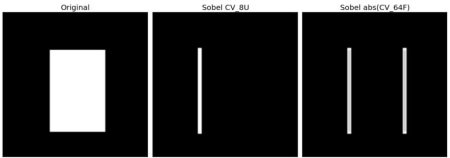

Image Gradients
Goal
In this chapter, we will learn to:
- Find Image gradients, edges etc
- We will see following functions : cv2.Sobel(), cv2.Scharr(), cv2.Laplacian() etc
Theory
OpenCV provides three types of gradient filters or High-pass filters, Sobel, Scharr and Laplacian. We will see each one of them.
1. Sobel and Scharr Derivatives
Sobel operators is a joint Gausssian smoothing plus differentiation operation, so it is more resistant to noise. You can specify the direction of derivatives to be taken, vertical or horizontal (by the arguments, yorder and xorder respectively). You can also specify the size of kernel by the argument ksize. If ksize = -1, a 3x3 Scharr filter is used which gives better results than 3x3 Sobel filter. Please see the docs for kernels used.
2. Laplacian Derivatives
It calculates the Laplacian of the image given by the relation, \(\Delta src = \frac{\partial ^2{src}}{\partial x^2} + \frac{\partial ^2{src}}{\partial y^2}\) where each derivative is found using Sobel derivatives. If ksize = 1, then following kernel is used for filtering:
Code
Below code shows all operators in a single diagram. All kernels are of 5x5 size. Depth of output image is passed -1 to get the result in np.uint8 type.
import cv2 import numpy as np from matplotlib import pyplot as plt img = cv2.imread('dave.jpg',0) laplacian = cv2.Laplacian(img,cv2.CV_64F) sobelx = cv2.Sobel(img,cv2.CV_64F,1,0,ksize=5) sobely = cv2.Sobel(img,cv2.CV_64F,0,1,ksize=5) plt.subplot(2,2,1),plt.imshow(img,cmap = 'gray') plt.title('Original'), plt.xticks([]), plt.yticks([]) plt.subplot(2,2,2),plt.imshow(laplacian,cmap = 'gray') plt.title('Laplacian'), plt.xticks([]), plt.yticks([]) plt.subplot(2,2,3),plt.imshow(sobelx,cmap = 'gray') plt.title('Sobel X'), plt.xticks([]), plt.yticks([]) plt.subplot(2,2,4),plt.imshow(sobely,cmap = 'gray') plt.title('Sobel Y'), plt.xticks([]), plt.yticks([]) plt.show()
Result:

One Important Matter!
In our last example, output datatype is cv2.CV_8U or np.uint8. But there is a slight problem with that. Black-to-White transition is taken as Positive slope (it has a positive value) while White-to-Black transition is taken as a Negative slope (It has negative value). So when you convert data to np.uint8, all negative slopes are made zero. In simple words, you miss that edge.
If you want to detect both edges, better option is to keep the output datatype to some higher forms, like cv2.CV_16S, cv2.CV_64F etc, take its absolute value and then convert back to cv2.CV_8U. Below code demonstrates this procedure for a horizontal Sobel filter and difference in results.
import cv2 import numpy as np from matplotlib import pyplot as plt img = cv2.imread('box.png',0) # Output dtype = cv2.CV_8U sobelx8u = cv2.Sobel(img,cv2.CV_8U,1,0,ksize=5) # Output dtype = cv2.CV_64F. Then take its absolute and convert to cv2.CV_8U sobelx64f = cv2.Sobel(img,cv2.CV_64F,1,0,ksize=5) abs_sobel64f = np.absolute(sobelx64f) sobel_8u = np.uint8(abs_sobel64f) plt.subplot(1,3,1),plt.imshow(img,cmap = 'gray') plt.title('Original'), plt.xticks([]), plt.yticks([]) plt.subplot(1,3,2),plt.imshow(sobelx8u,cmap = 'gray') plt.title('Sobel CV_8U'), plt.xticks([]), plt.yticks([]) plt.subplot(1,3,3),plt.imshow(sobel_8u,cmap = 'gray') plt.title('Sobel abs(CV_64F)'), plt.xticks([]), plt.yticks([]) plt.show()
Check the result below:
Additional Resources
Exercises